Visualized Linear Algebra to Get Started with Machine Learning: Part 2
Master elements of linear algebra, start with simple and visual explanations of basic concepts.
October 6, 2024 · Linear Algebra
Introduction
In this article, we continue the work we started in “Visualized Linear Algebra to Get Started with Machine Learning: Part 1”. We tackle new concepts of linear algebra in a simple and intuitive way. These articles are intended to introduce you to the world of linear algebra and make you understand how strongly the study of this subject and other mathematical subjects is related to data science.
Index
- Solve Equations
- Determinants
- Advanced Changing Basis
- Eigenvalues and Eigenvectors
- Calculating Eigenvalues and Eigenvectors
Solve Equations
Let’s finally try to understand how to solve equations simultaneously. You will by now have become familiar with writing equations compactly using matrices and vectors, as in this example.
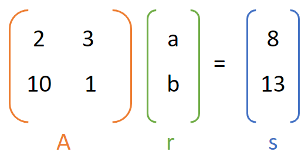
Finding the vector of unknowns r = [a,b], is quite straightforward; we only need to multiply the left and right sides of the equation by the inverse of matrix A.
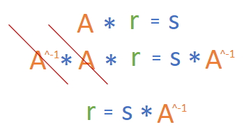
We see that A^-1 and A cancel, since multiplication for a matrix by its inverse always gives the identity matrix (that is, the matrix that has all 1’s on the main diagonal and zero elsewhere). And so we find the value of r.
But in order to do this we have to compute A^-1 which may not be too simple. Often programming languages have algorithms already implemented that are very efficient in calculating the inverse matrix, so you will always have to use those. But in case you want to learn how to do this calculation by hand you will have to use Gaussian Elimination.
This is for example how you compute the inverse by using numpy in Python.
import numpy as np
A = np.array([[6, 1, 1],
[4, -2, 5],
[2, 8, 7]])
# Calculating the inverse of the matrix
print(np.linalg.inv(A))Determinants
The determinant is another fundamental concept in line algebra. It is often taught in college how to calculate it but not what it is. We can associate a value with each matrix, and that value is precisely the determinant. However, you can think of the determinant as the area of the deformed space.
We have seen how each matrix is simply a deformation of space. Let us give an example.
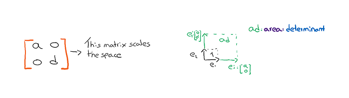
If we calculate the area of the new space, as shown in the figure, this area is precisely the determinant associated with the starting matrix. In this case the determinant = a*d.
Certainly, we have matrices that can describe somewhat more complex deformations of space, and in that case, it may not be so trivial to calculate the area i.e., the determinant.
For this, there are known formulas for calculating the determinant. For example, let us see the formula for calculating the determinant of a 2x2 matrix.
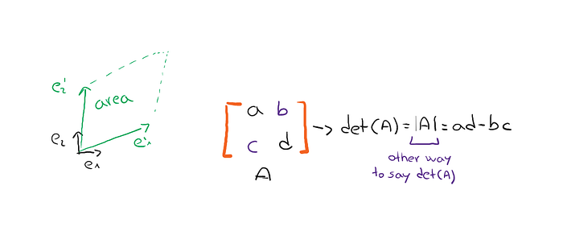
You can look here to learn how to calculate the determinant in general cases with larger matrices.
If you think about it, however, there are transformations that do not create any area. Let’s look at the following example.
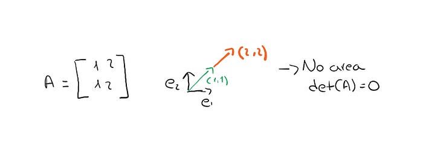
In this example, the matrix does not allow us to create any area, so we have a determinant equal to zero.
But what is the use of knowing the determinant? We have seen that to solve simultaneous equations we need to be able to calculate the inverse of a matrix.
But the inverse of a matrix does not exist if the determinant is equal to zero! That is why it is important to know how to calculate it, to know if there are solutions to the problem.
You can think of the inverse matrix, as a way of transforming the space back to the original space. But when a matrix causes, not an area but only a segment to be created, and then makes us go from 2d to 1d space, the inverse matrix does not have enough information and will never be able to make us go back to the original space in 2d from that in 1d.
Advanced Changing Basis
We have already seen in the previous article the basic example of changing the basis, but now let’s look at a somewhat more complex example.
Let’s imagine the existence of two worlds, ours and Narnia’s. In our world, we use the vectors e1 and e2 as our reference vectors, as the basis. Thanks to these vectors we are able to create others and assign coordinates to them. For example, we can create the vectors [1,1], and [3,1].
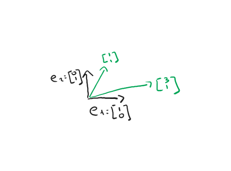
In the world of Narnia though, they use different vectors as a base. Can you guess which ones they use? Just the ones we call [1,1] and [3,1].
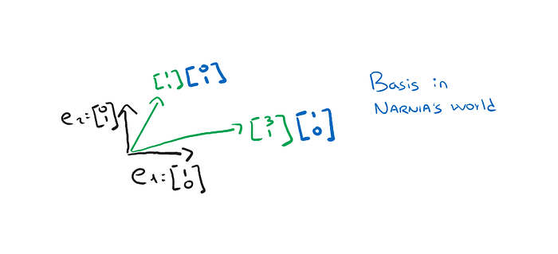
The people of Narnia will then use this basis of theirs to define other vectors of space, for example, they may define the vector [3/2, 1/2].
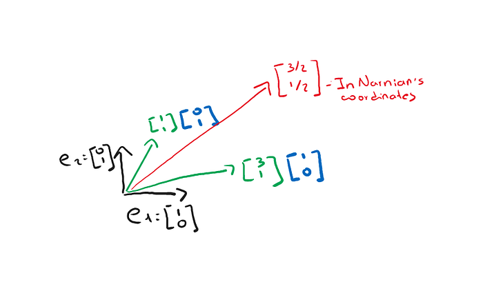
Well, now what I want to find out is: how do I define that red vector based on the coordinates of my world?
We have already seen this, we take the vectors that form the basis of Narnia but expressed in the coordinates of my world, so [1,1] and [3,1]. We put them in a matrix and multiply this matrix by the red vector.
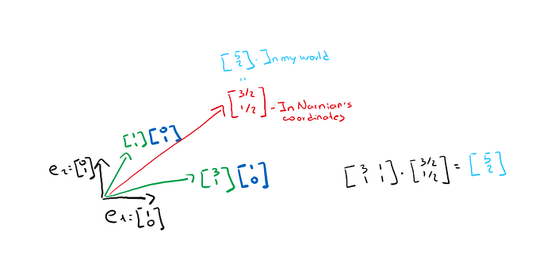
Now we ask: can we do the reverse as well? Can I express a vector of my world according to the coordinates they use in Narnia? Of course!
It will suffice to do the same process but change the point of view. But why do we do all this? Very often when we have to describe vectors or transformations, we have a much simpler notation if we use a different basis.
Suppose we want to apply an R-transformation to a vector. But this transformation turns out to be difficult to apply. Then we can first transform my vector into a vector in the world of Narnia by applying the matrix N. After that we apply the desired transformation R. And then we bring everything back to our original world with N^-1.
This is something that can be very useful and make life easier when we are dealing with complex transformations. I hope I have at least given you some insight; there is so much more to talk about.
Eigenvalues and Eigenvectors
We have already repeated several times that applying a linear transformation (a matrix) to a vector transforms that vector.
However, there are cases in which the vector remains in the same initial direction. Think for example the case where we simply scale the space. If we visualize the horizontal and the vertical vector these remain in the same direction although they get longer or shorter.
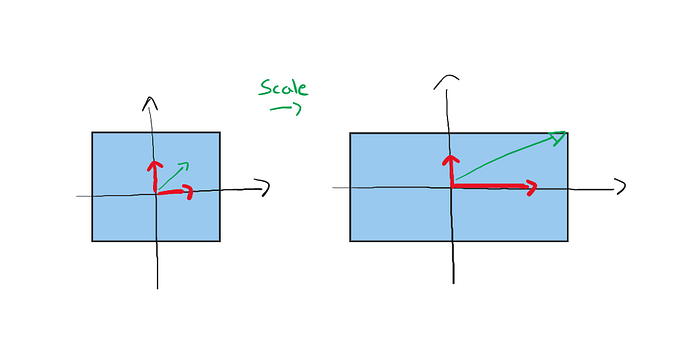
We see in the image above that the linear transformation applied here is that of scaling. But if we try to understand what happens to each individual vector we notice that the red vectors still maintain the same direction.
These vectors that maintain the same direction are called Eigenvectors of the matrix that described this transformation.
In particular, the vertical red vector has remained unchanged, so let’s say it has eigenvalue =1 while the other red vector has doubled so let’s say it has eigenvalue =2.
Obviously depending on the matrix, and thus the transformation, the number of eigenvectors may vary.
Calculating Eigenvalues and Eigenvectors
Let us now try to convert what we have expressed in words into a mathematical formula. So eigenvectors are those vectors to which when a matrix is applied they do not change, at most they lengthen or shorten.
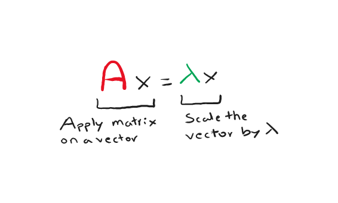
In the formula A is a matrix, x is a vector and lambda is a scalar. If the condition is satisfied we say that x is an eigenvector of A with the corresponding eigenvalue lambda.
By solving the previous equation we can find the value of the eigenvalues that solve the equation, let’s see how to do it.
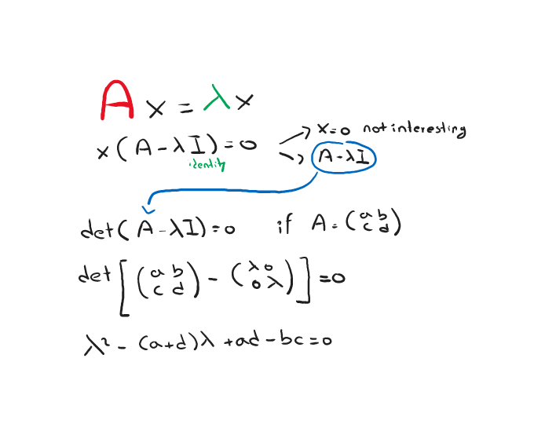
Once the eigenvalues have been found, it will suffice to substitute them into the following equation to find the eigenvectors.
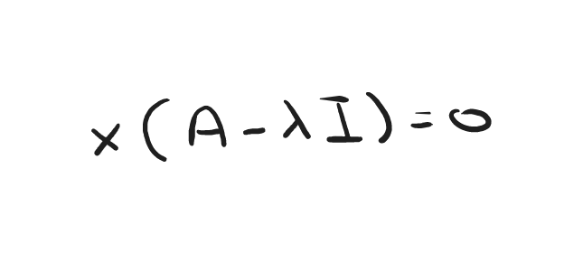
Final Thoughts
I hope you have found some useful insights in this article and that you have understood them without too much effort. The purpose is to get a little familiar with these terms and linear algebra elements. In this way, I hope that the next time you go to look at the documentation of sklearn or some library you will be able to better understand what that particulate function you are using is actually doing! 😊
The Ends
Marcello Politi
This article was published on Towards Data Science